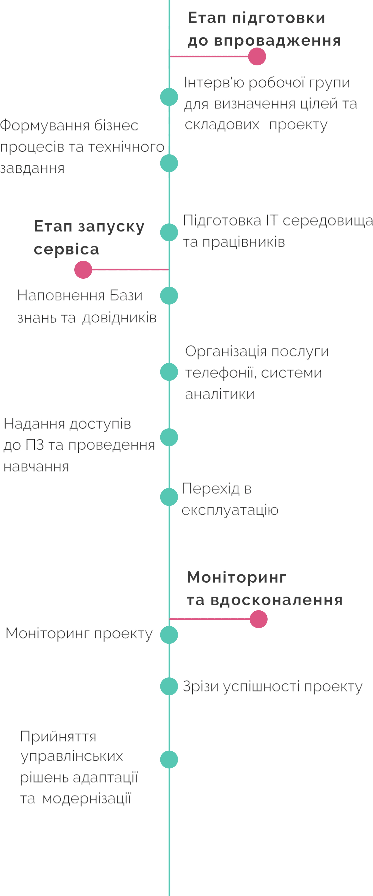
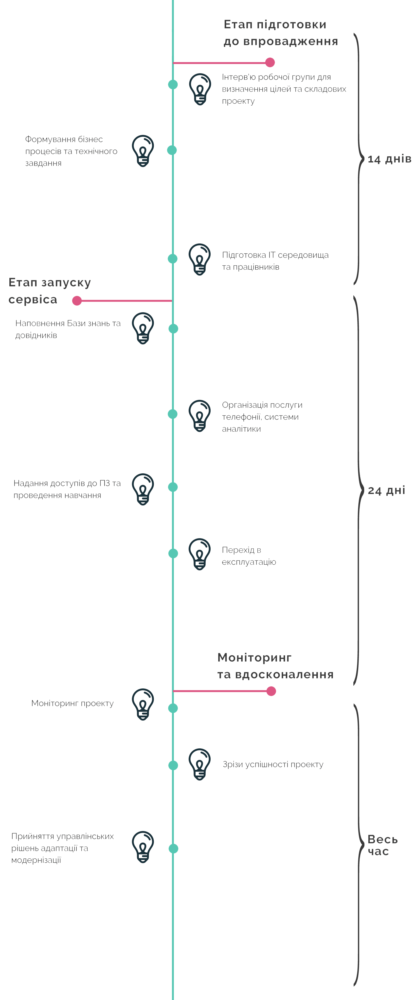
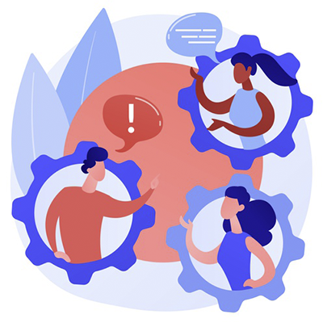
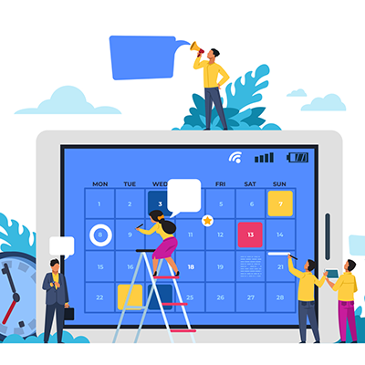

Як це працює?
На цій сторінці ми хотіли б
😄👍пояснити проблеми та переваги, пов'язані з проектом,
📄👨💼ознайомит Вас з планом впровадження контактного центру,
📋✅розповісти Вам про функції, які виконує система КТН та завдання, які вона допомагає вирішити,
🤹♀➰проілюструвати детальну мапу процесів, які відбуваються у проекті.
Проблематика відсутності та переваги наявності контакт центру для громад
- 🙋♀🙋♂️ Звернення мешканців
- 👨💼💬👩💼 Комунікація
- 📧📞📱 Пряма лінія ОТГ
- 📋🕐✅ Контроль виконавців
- 📈📊📅 Статистика
🙁 Без контактного центру
Відсутність розуміння до якого виконавця звертатися та як взаємодіяти з ним. Негатив від непорозумінь перетворюється на негатив у бік влади.
😀 З контактним центром
Можливість отримати консультацію або залишити запит стосовно послуги за допомогою єдиної телефонної лінії, сайта, тощо.
😟 Без контактного центру
Інформування про важливі та надзвичайні події відбувається через друковані носії. Відсутність систематизованої комунікації з мешканцями ОТГ та брак інформаційного поля призводить до розриву зв'язку між мешканцем та владою.
😊 З контактним центром
Інформування про важливі та надзвичайні події відбуваються через єдине інформаційне поле. Вчасна та ефективна комунікація покращує зв'язок між мешканцем та владою.
😞 Без контактного центру
Не всі мешканці мають можливість задавати прямі запитання до місцевої влади, як правило, питання залишаються відкритими, а відстань між громадою та владою зростає.
🙂 З контактним центром
Організація "Прямої лінії" підвищує рівень лояльності та довіри мешканців, забезпечує можливість демонстрації прийняття прозорих рішень влади.
😠 Без контактного центру
Відсутність системи опрацювання звернень. Замовник не має можливості контролювати хід виконання робіт та якість наданих послуг.
😁 З контактним центром
Контроль ходу виконання робіт забезпечує якісне та своєчасне вирішення запитів мешканців ОТГ.
😩 Без контактного центру
Відсутність загальної різнорівневої статистики унеможливлює відслідковування проблематики та своєчасне прийняття обгрунтованих управлінських рішень.
😄 З контактним центром
Система аналітики забезпечує відслідковування проблематики та своєчасне прийняття обгрунтованих управлінських рішень.
План впровадження


Функції системи
📝 Фіксація звернень мешканців
👨💼 Автоматичний вибір виконавця
⏱ Контроль дотримання строків надання послуг
💬 Автоматичне інформування про зміну статусів заяв
📊 Статистика та звітність online
🔐 Розподілення права доступу
Задачі, які вирішує система
💻 Онлайн взаємодія між населенням та ОТГ
❓❗ Визначення найбільш проблемних питань у розрізі: територій та/або виконавця
🕒 Скорочення часу на вирішення питань мешканців
📅 Автоматичний контроль строків виконання заяв
📇 Накопичення аналітичних даних для планування заходів по утриманню комунального господарства
🔄 Забезпечення зворотнього зв'язку для контроля якості вирішення питань мешканців
Мапа процесів
-

Звернення користувача
📞 Дзвінок до центру
- Розподіл дзвінків на черги за пріорітетами
- Інформування про важливі загальні або персональні події та робочий графік ліній
- Додаткові інформування під час очікування в черзі
- Сповіщення про місце в черзі до з'єднання
📧 Текстові канали
- Викладення звернення поштою
- Залишення звернення на сайті, через месенджер бот або мобільний додаток
-
Опрацювання звернення оператором
📝 Заповнення картки
- Система автоматично відкриває картку користувача або нову картку, якщо такого акаунта не існує
- Оператор бачить звернення, що можуть стосуватися заявника (звернення за адресою, за номером, глобальні звернення, історія звернень)
- Більшість важливих даних заявника підтягуються автоматично, оператору залишається вислухати заявника, занести звернення та додати тип звернення)
- Згідно з типом система автоматично визначить виконавця та термін виконання
💬 Консультації
- Для надання консультації оператор має інструменти - портал та база знань, у яких за допомогою пошуку та зручної навігації можна надати оперативну, достовірну інформацію
📧 Текстові канали
- Звернення заносяться автоматично до системи без втручання оператора
-

Розподіл, виконання, контроль
📌 Розподіл звернень
- Звернення, внесені до системи, надходять до координаторів - відповідальних осіб, виконавчих органів
- Координатори розподіляють звернення між виконавцями
🔧 Виконання
- Виконавці власноруч, або за допомогою координатора вносять результати виконання. Такі звернення повертаються до координаційного центру
🕵️♀️ Контроль
- Координатор має сторінку, на якій виводяться всі звернення, що стосуються його зони відповідальності та на якому етапі вони знаходяться
- Звернення, термін виконання яких доходить до критичного - підсвічуються червоним
- Якщо координатор бачить звернення, що не підпорядковується зоні його відповідальності - він має право повернути звернення
-
Додаткові процеси
📞 Прямі лінії
- Створення спеціальної черги за допомогою якої громадяни можуть звернутися в режимі онлайн в обмежений період часу сесії та почути відповіді на свої питання
❗❗ Масові інформування
- Масові автоматизовані дзвінки громадянам з інформаційним сповіщенням
- Масові автоматизовані розсилки громадянам з інформаційним сповіщенням
-
Вихідна лінія
👩💼💬 Зворотній зв'язок
- Виконані звернення потрапляють до групи вихідної лінії
- Оператори виконують продзвін заявників, щоб сповістити про виконання звернення та запитати про якість його виконання
- Звернення, що були виконані не якісно система повертає до виконавців з відповідним пріорітетом
-
Звітність, статистика, аналітика та рейтинги
📈 Контакт центр
- Онлайн моніторинг завантаженості ліній
- Рейтинг операторів по кількісним показникам
- Оцінювання якісних показників роботи операторів
📄 Загальна інформація
- Кількість виконаних та просрочених заявок у загальному та детальному розрізі
- Рейтинг тенденцій звернень за темами
- Рейтинг проблемних секторів
- Карта з онлайн трансляцією
- Оперативна інформація знаходження виконавчих служб на карті в режимі онлайн
📊 Рейтинг виконавців
- Рейтинг формується кількістю вчасно виконаних звернень
- Кожне повернуте зверення на доопрацювання зменшує рейтинг виконавця
- Кожне просрочене виконання зменшує рейтинг виконавця
- Кожна підтверджена скарга зменшує рейтинг виконавця
-